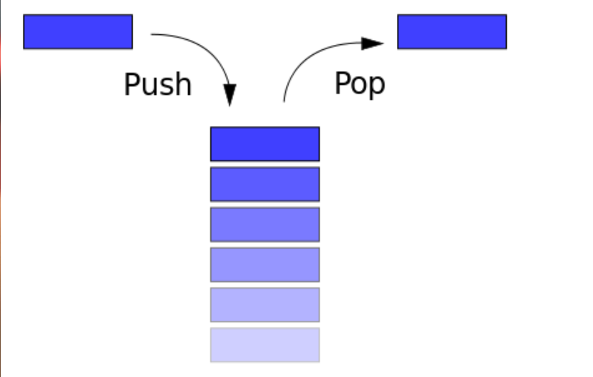
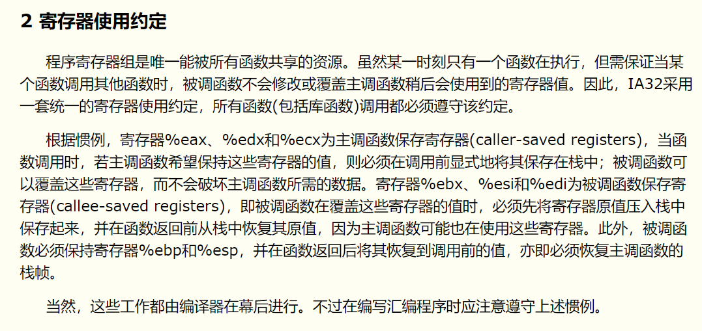
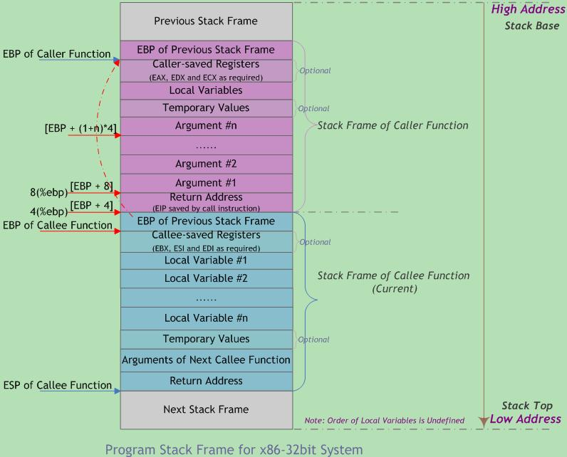
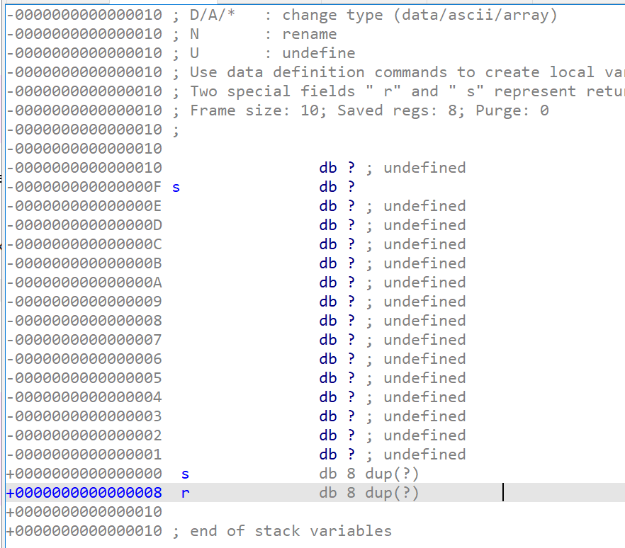

栈溢出基础原理
抛出问题
- 进程的内存主要由哪几部分构成，其中栈结构主要保存什么内容？
- 栈帧结构是什么样的？寄存器起到哪些作用？
- X86和X86_64的栈结构有哪些不同之处？
- 对栈操作的大致过程是怎样的？
- 栈溢出的原理是什么？
基础栈介绍
每个程序在运行时都有虚拟地址空间，其中某一部分就是该程序对应的栈，用于保存函数调用信息和局部变量。此外，常见的操作也是压栈与出栈。需要注意的是，程序的栈是从进程地址空间的高地址向低地址增长的。

进程使用的内存大致可以分成四个部分：代码区、数据区、堆区、栈区。这个将在《程序员的自我修养》读书笔记中重点分析。
32 位和 64 位程序有以下简单的区别
- x86函数参数在函数返回地址的上方
- x64中前六个整型或指针参数依次保存在RDI, RSI, RDX, RCX, R8 和 R9 寄存器中，如果还有更多的参数的话才会保存在栈上。内存地址不能大于 0x00007FFFFFFFFFFF，6 个字节长度，否则会抛出异常。
C语言函数调用栈（一）
程序的执行可以看作是连续的函数调用，函数调用的过程通常使用堆栈实现。其中栈上的主要保存：
- 函数参数
- 函数返回地址
- 临时保存寄存器原有值(即函数调用的上下文)
- 存储本地局部变量
栈帧指针寄存器FP，在Intel CPU中用BP作帧指针。

寄存器%eax、%edx和%ecx主调函数保存寄存器由主调函数显式的保存到栈中，先于返回地址进入栈中。
寄存器%ebx、%esi和%edi被调函数保存寄存器由被调函数保存到栈中，后于返回地址进入栈中。
栈帧结构

实参N-1 -> 主调函数返回地址 -> 主调函数帧基指针EBP -> 被调函数局部变量1-N
x86平台将参数压入调用栈中。而x86_64平台具有16个通用64位寄存器，故调用函数时前6个参数通常由寄存器传递，其余参数才通过栈传递。
被调函数执行自己任务，此时可能需要访问由主调函数传入的参数。若被调函数返回一个值，该值通常保存在一个指定寄存器中(通常都是EAX)
C语言函数调用栈(二)
函数调用约定
函数通过选择特定的调用约定，来表明其希望以特定方式接收参数。主要有几个方面
- 函数参数的传递顺序和方式： 最常见的参数传递方式是通过堆栈传递。主调函数将参数压入栈中，被调函数以相对于帧基指针的正偏移量来访问栈中的参数。对于有多个参数的函数，调用约定需规定主调函数将参数压栈的顺序(从左至右还是从右至左)。某些调用约定允许使用寄存器传参以提高性能。
- 栈的维护方式： 主调函数将参数压栈后调用被调函数体，返回时需将被压栈的参数全部弹出，以便将栈恢复到调用前的状态。该清栈过程可由主调函数负责完成，也可由被调函数负责完成。
- 名字修饰策略：又称函数名修饰(Decorated Name)规则。编译器在链接时为区分不同函数，对函数名作不同修饰。
cdecl调用约定
- C调用约定，是C/C++编译器默认的函数调用约定。函数参数按照从右到左的顺序入栈，函数调用者负责清除栈中的参数，返回值在EAX中。
- 可以支持可变参数函数，即参数的数量不定。最左边的参数最接近栈顶位置。调用时即使实参和形参数目不符也不会导致堆栈错误
stdcall调用约定
- WinAPI采用该调用约定。stdcall调用约定主调函数参数从右向左入栈，除指针或引用类型参数外所有参数采用传值方式传递，由被调函数负责清除栈中的参数，返回值在EAX中。
- 仅适用于参数个数固定的函数，因为被调函数清栈时无法精确获知栈上有多少函数参数；
x86函数参数传递方法
x86处理器ABI规范中规定，所有传递给被调函数的参数都通过堆栈来完成，其压栈顺序是以函数参数从右到左的顺序。当向被调函数传递参数时，所有参数最后形成一个数组。由于采用从右到左的压栈顺序，数组中参数的顺序(下标0N-1)与函数参数声明顺序(Para1 N)一致。因此，在函数中若知道第一个参数地址和各参数占用字节数，就可通过访问数组的方式去访问每个参数。
X86_64 中前六个整型或指针参数依次保存在 RDI, RSI, RDX, RCX, R8 和 R9 寄存器中，如果还有更多的参数的话才会保存在栈上。
栈溢出原理
栈溢出指的是程序向栈中某个变量中写入的字节数超过了这个变量本身所申请的字节数，因而导致与其相邻的栈中的变量的值被改变。这种问题是一种特定的缓冲区溢出漏洞，类似的还有堆溢出，bss 段溢出等溢出方式。栈溢出漏洞轻则可以使程序崩溃，重则可以使攻击者控制程序执行流程。此外，我们也不难发现，发生栈溢出的基本前提是
- 程序必须向栈上写入数据。
- 写入的数据大小没有被良好地控制。
前提：PIE保护关闭

s表示
push ebp的地址，r表示函数的返回地址，指定地址应该覆盖r所在的地址
分析问题
问题1：进程的内存主要由哪几部分构成，其中栈结构主要保存什么内容？
进程的内存主要由代码段、数据段、堆段、栈段构成。函数的调用关系等信息会动态地保存在内存的栈区，因此栈结构用于保存函数调用信息和局部变量。包括函数参数（例如主调函数传递给被调函数的参数）、函数返回地址（被调函数执行结束以后需要返回到主调函数）、函数局部变量、寄存器的值（被调函数调用一些寄存器之前，可能需要先将寄存器中的值保存到栈中，因为寄存器中可能保存着主调函数需要使用的值）。
问题2：栈帧结构是什么样的？寄存器起到哪些作用？
寄存器用于存放程序执行中用到的数据和指令。在函数调用的过程中起到重要的作用。栈帧是每一个函数占用的一个独立的区域，栈帧是堆栈的逻辑片段，当调用函数时逻辑栈帧被压入堆栈, 当函数返回时逻辑栈帧被从堆栈中弹出。
EBP（帧基指针）：EBP指向是每一个栈帧的基址。一个栈的基址存放的是函数的返回地址。当调用函数栈帧压入堆栈的时候。执行的指令是 :push eip mov ebp esp。函数返回之前，EBP始终指向栈帧的基址，因此函数中对大部分数据的访问都基于EBP进行，通常用EBP + 偏移地址作为一个符号的地址。
ESP（栈顶指针）：ESP通常指向一个栈帧的顶点，但是在出栈入栈的时候ESP的值是不断发生改变的。
其他寄存器在函数存档和函数返回参数的时候也会起到作用。若返回值不超过4字节，通常将其保存在EAX寄存器中。具体内容看“函数使用约定”和“ x86函数返回值传递方法”。
问题3：X86和X86_64的栈结构有哪些不同之处？
最大的不同就是x86平台将参数压入调用栈中。而x86_64平台调用函数时前6个参数通常由寄存器传递，其余参数才通过栈传递。这一点需要重点注意。
问题4：对栈操作的大致过程是怎样的？
- 当主调函数调用被调函数的时候，操作系统需要使用寄存器先对主调函数进行存档，然后，按照将被调函数所要求的参数，根据相应的函数调用约定，保存在运行时栈中。此时EBP并没有发生改变，所以函数参数是存放在主调函数的栈帧中的。同时主调函数可能会把一些不希望被调函数覆盖的寄存器（如%eax、%edx和%ecx）中的值先压入栈（保存了主调函数信息的值）
- 使用CALL等跳转指令以后，EIP发生的跳转，被调函数的栈帧进入栈中。然后返回地址放入被调函数的基地址（
push eip），随后设置帧基指针EBP（mov ebp esp）。 - 被调函数局部变量依次被压入栈，如果将数组压入栈，会执行
sub esp X分配X大小的栈空间给数组。同时被调函数也会把一些不能被覆盖的寄存器中的值压入栈，才能调用寄存器。 - 被调函数通过修改栈顶指针的值，为自己的局部变量在运行时栈中分配内存空间，并从帧基指针的位置处向低地址方向存放被调函数的局部变量和临时变量。
- 被调函数执行自己任务，此时可能需要访问由主调函数传入的参数。若被调函数返回一个值，该值通常保存在一个指定寄存器中(如EAX)。
- 一旦被调函数完成操作，为该函数局部变量分配的栈空间将被释放（
mov esp ebp）。然后 恢复步骤3中保存的寄存器值，包含主调函数的帧基指针寄存器（**pop ebp）。两个指令合并称为leave指令** - 被调函数将控制权交还主调函数(使用ret指令)。根据使用的函数调用约定，该操作也可能从程序栈上清除先前传入的参数。
- 主调函数再次获得控制权后，可能需要将先前的参数从栈上清除。
需要注意的点：
- 我们不能直观的判断出被调函数的某个局部变量或者某个参数距离返回地址之间的大小。因为返回地址前后都不定数量的寄存器被压入栈。只能通过调试软件进行分析。
- 一定要注意x86平台是将参数直接压入调用栈中。而x86_64平台具有16个通用64位寄存器，故调用函数时前6个参数通常由寄存器传递，其余参数才通过栈传递。
问题5：栈溢出的原理是什么？
栈溢出指的是程序向栈中某个变量中写入的字节数超过了这个变量本身所申请的字节数，因而导致与其相邻的栈中的变量的值被改变。那么就可以：
- 修改相邻栈中变量的值。
- 修改函数的返回地址，使返回地址跳转到我们希望进入的地址。